Publications
Journal Covers
{kind=link}
Publications
Digital light processing printing of non-modified protein-only compositions
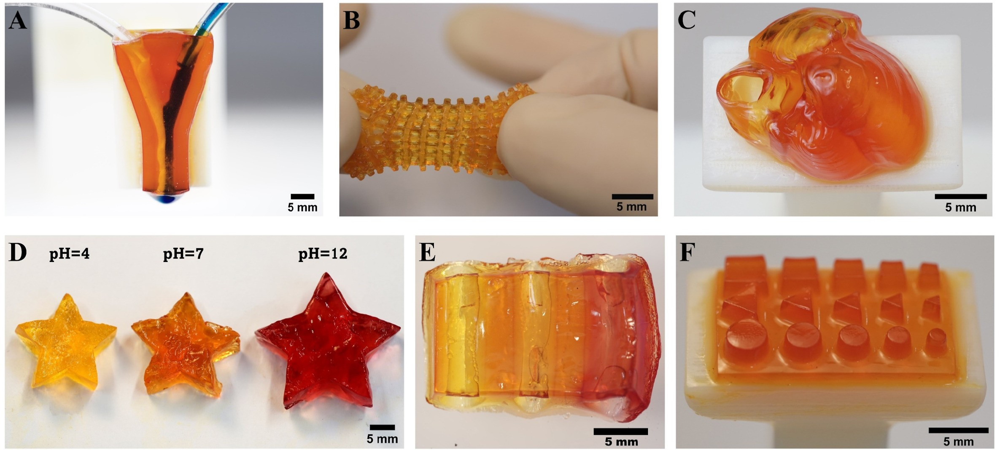
Vat photopolymerization printing by thermal polymerisation utilising carbon nanotubes as photothermal converters
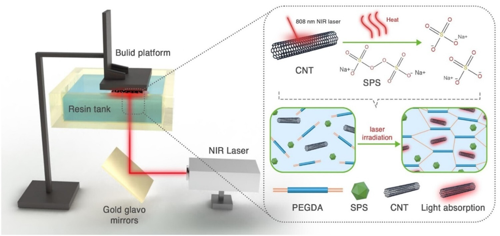
3D printing by stereolithography using thermal initiators
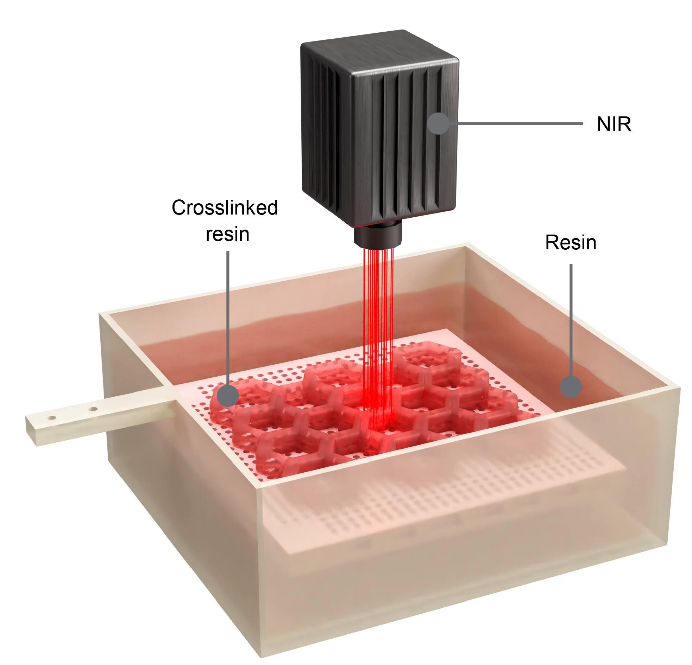
ZnO Quantum Photoinitiators as an All-in-One Solution for Multifunctional Photopolymer Nanocomposites
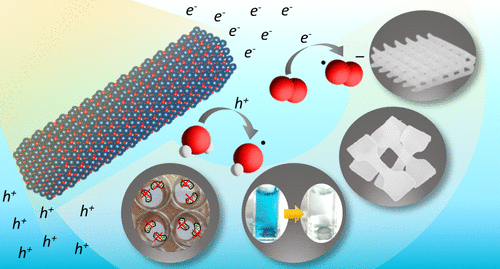
3D Printing Thermally Stable High‐Performance Polymers Based on a Dual Curing Mechanism
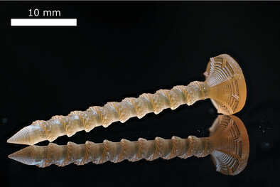
3D Printing of Resilin in Water by Multiphoton Absorption Polymerization
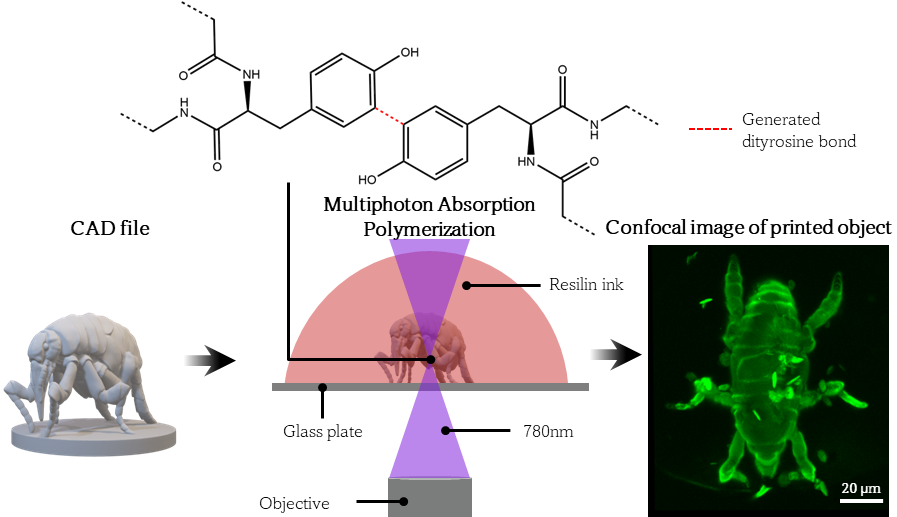
One-step double network hydrogels of photocurable monomers and bacterial cellulose fibers
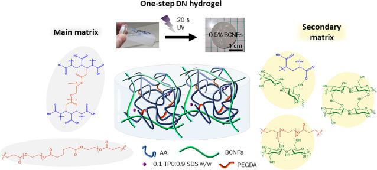
Wood Warping Composite by 3D Printing
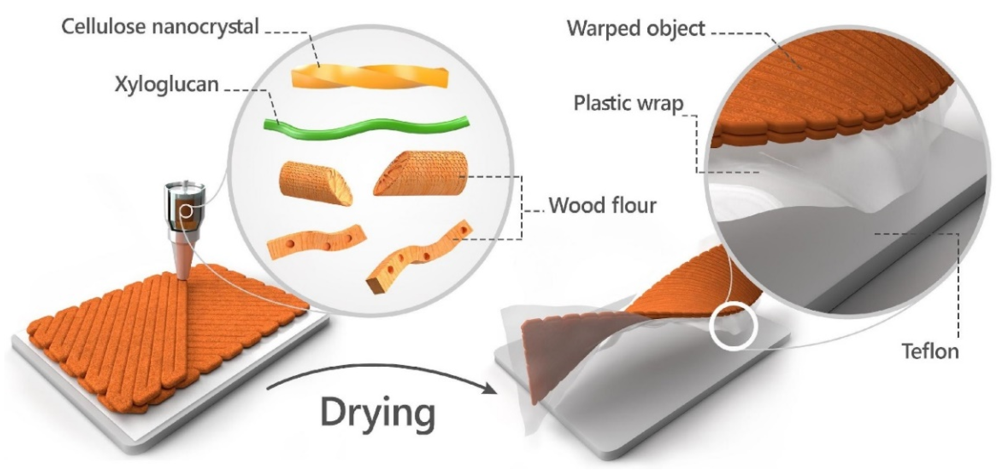
3D Printing of Cellulose Nanocrystal-Loaded Hydrogels through Rapid Fixation by Photopolymerization
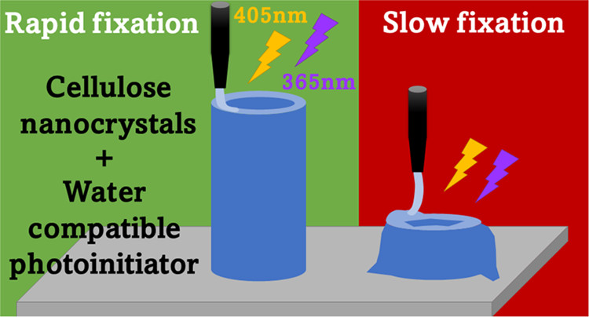
Additive Manufacturing of 3D Structures Composed of Wood Materials
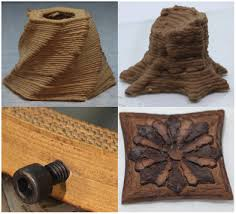
Direct Cryo Writing of Aerogels via 3D Printing of Aligned Cellulose Nanocrystals Inspired by the Plant Cell Wall
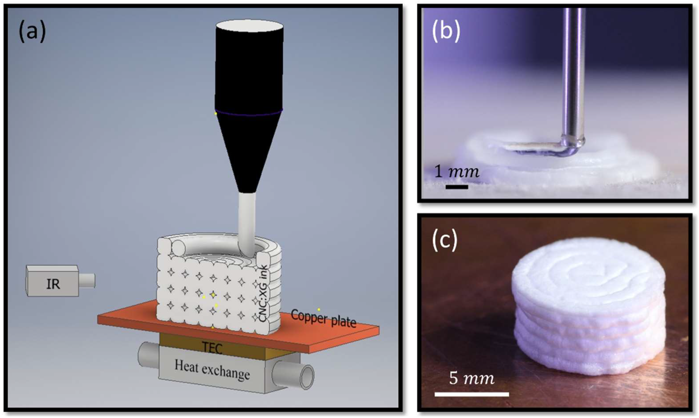
Highly Charged Cellulose Nanocrystals Applied as A Water Treatment Flocculant
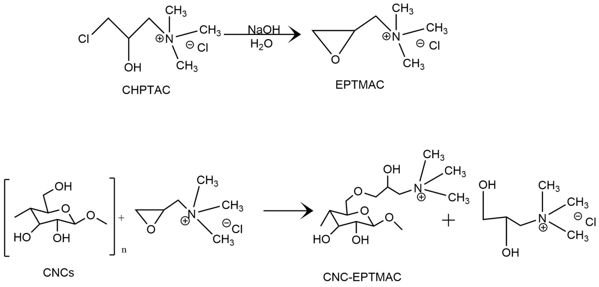
Surface Charge Influence on the Phase Separation and Viscosity of Cellulose Nanocrystals
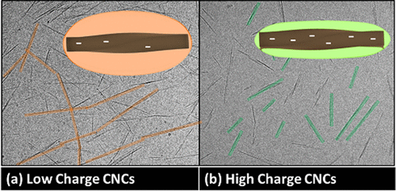
Nanoscale electromechanical properties of template-assisted hierarchical self-assembled cellulose nanofibers
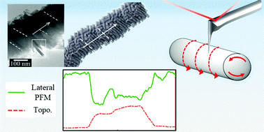
Highly Modified Cellulose Nanocrystals and Formation of Epoxy-Nanocrystalline Cellulose (CNC) Nanocomposites
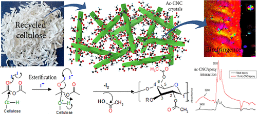
No matching items